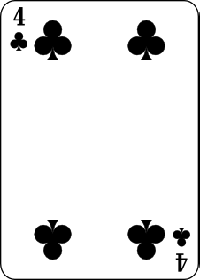
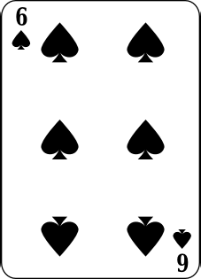
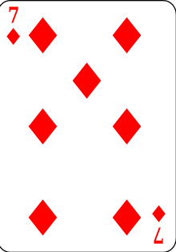
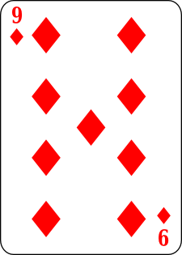
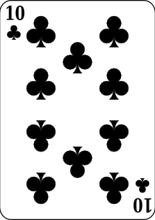

Règles du jeu du Dutch
Ce jeu se joue entre 2 et 10 personnes avec 1 ou 2 (à partir de 5 joueurs) jeux de cartes sans les jokers. Il y a plusieurs manches et on compte les points à la fin de chaque manche.
Une partie dure en moyenne 30min, jusqu'à qu'un joueur atteinge ou dépasse les 100 points.
Le but final du jeu est d'avoir le moins de points possibles.
Déroulement d'un tour :
- Chaque joueur reçoit 4 cartes face cachée, le reste des cartes est placé dans une pile au centre de la table
- Chaque joueur place ses cartes en carré devant lui et regarde 2 de ses cartes avant de les reposer
- Le joueur le plus jeune ou celui qui a gagné le tour précédent commence, c'est à dire peut échanger une carte
- Si le joueur veut échanger une carte avec la pioche, il prend la carte sur le dessus, la regarde, la mets dans son jeu et pose l'autre carte sur la pile de rejet à côté, face visible
- Si le joueur veut échanger une carte avec la pioche de rejet, il prend la carte sur le dessus, la regarde, la mets dans son jeu et pose l'autre carte sur la pile de rejet à côté, face visible
- Si la carte posée sur le dessus de la pioche de rejet à un "pouvoir", le joueur peut l'utiliser jusqu'à qu'une autre carte soit posée
- Si un joueur possède une carte similaire, il peut la poser sans avoir à en piocher une et utiliser leur "pouvoir" à la suite du premier joueur
- Si un joueur sait qu'un autre joueur possède une carte similaire, il peut la poser sur la pioche de rejet et donner une de ses cartes au joueur, sans qu'il puisse voir son contenu
- Si un joueur a fait une erreur :
- toucher la pioche sans raison;
- poser une carte de mauvaise valeur;
- toucher ses propres cartes;
- etc,...
- C'est au tour du joueur suivant dans le sens horaire
Voici la liste des cartes spéciales et leur pouvoir
Fin d'une manche
Une manche ne peut se terminer que d'une seule façon :
- Un joueur annonce Dutch à la fin de son tour
- Chaque joueur joue une fois
- Chaque joueur pose ses cartes face révélée
- Les points de chaque joueur sont comptés
On compte les points à la fin de chaque manche, en les additionnant à ceux gagnés avant
| Carte | Valeur | |
|---|---|---|
| 2 | +2pts | |
| 3 |  |
+3pts |
| 4 |  | +4pts |
| 5 |  |
+5pts |
| 6 |  | +6pts |
| 7 |  | +7pts |
| 8 |  |
+8pts |
| 9 |  | +9pts |
| 10 |  | +10pts |
| Valet | +11pts | |
| Dame | +12pts | |
| Roi | -1pts | |
| As | +15pts |